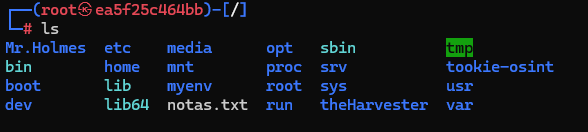
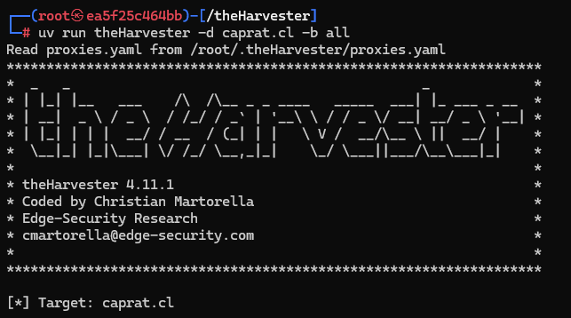

Encapsulando herramientas de osint
Llevo tiempo esquivando el uso de Docker, pero finalmente me he decidido a explorar su universo. Para sorpresa mía, la curva de aprendizaje no es tan empinada como esperaba. Con unos pocos comandos, he logrado levantar contenedores y experimentar con herramientas de OSINT de manera aislada y reproducible. Docker me ahorra pasos como instalar máquinas virtuales completas, permitiéndome centrarme en lo que realmente importa: la investigación y el análisis de datos. Aunque el mundo de Linux me apasiona, la portabilidad que ofrece Docker es un plus que no puedo ignorar. Ahora puedo compartir mis entornos de investigación con colegas sin preocuparme por diferencias en sus sistemas operativos.
Creía que solo podía instalar herramientas más “oficiales”, pero descubrí que puedo empaquetar mis propios scripts
y herramientas personalizadas en contenedores Docker. Esto me permite crear un entorno de investigación completo,
con todas las dependencias necesarias, y compartirlo sin configuraciones complicadas.
Docker encapsula herramientas de OSINT en contenedores portables, asegurando que cualquier investigador pueda ejecutarlas
sin preocuparse por dependencias, versiones o configuraciones del sistema operativo.
En la imagen se aprecia cómo instalé herramientas populares como Mr.Holmes y Tookie en contenedores Docker,
creando un laboratorio portátil y reproducible.

Al empaquetar herramientas como sn0int, Tookie o scrapers personalizados, se obtiene un entorno reproducible que facilita auditorías, investigaciones y despliegues rápidos.

Aquí se puede ver un ejemplo de cómo ejecutar theHarvester dentro de un contenedor Docker, aislando su entorno y asegurando que funcione de manera consistente en cualquier sistema.